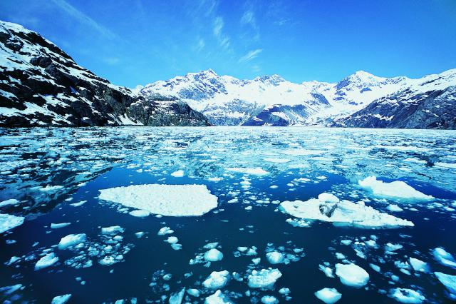

Why does ice float in water?
Science · 5 min read

Ice floats in water because it is less dense than liquid water. Density means how much matter is packed into a certain amount of space. When water freezes, its molecules arrange themselves into a structure that takes up more space than they do in liquid water.
In liquid water, the molecules can move around and stay relatively close together. But when water freezes, the molecules form a more open structure because of hydrogen bonds. This makes ice occupy more space while the same amount of water remains, so its density decreases.
Science ice is less dense than liquid water , it floats on the surface instesd of sinking. This property is important for life in lakes anmd ponds during the winter because the layer floating ice help insulate the water below, allowing aquatic animals to survive in the colder months.